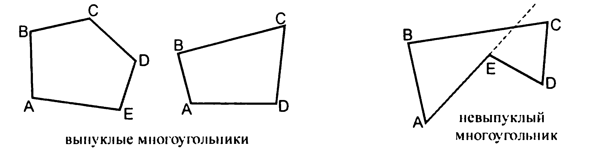

Суммма углов выпуклого n-угольника
Многоугольник — геометрическая фигура, обычно определяемая как часть плоскости, ограниченная замкнутой ломаной. Если граничная ломаная не имеет точек самопересечения, многоугольник называется выпуклым.
Формула: S = 180° × (n - 2)

Количество углов:
Ответ: